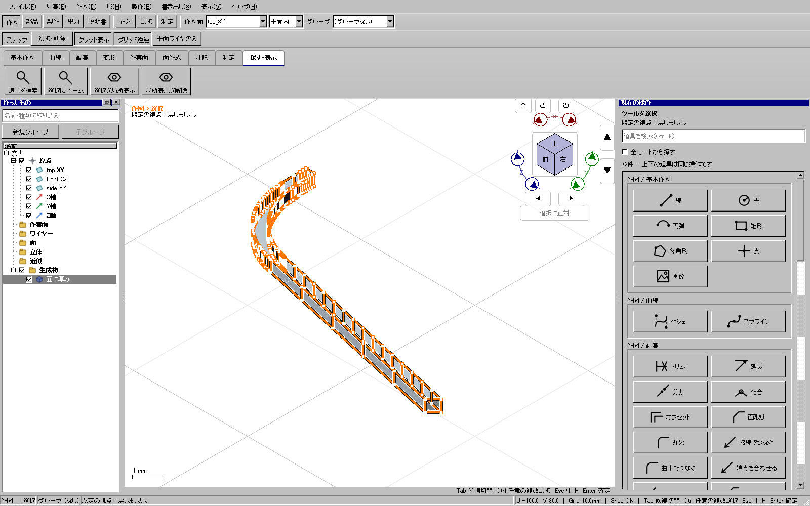

限定実装の関連回帰を確認済み。全体・配布版ゲートは待ちであり、公開更新6はこの変更を含まない。
実UI382で有効な平面から分割・押し出し・独立平板とSTEPを作れたが、同じ面を製作モデルにすると「境界標本の上限」で停止した。独立診断385/386bでも、C1区間内の短い滑らかなノット区間をまたぐ細分化が、深さ20・157点・偏差約0.000599691 mmとなり、既存の0.0005 mmを満たさないことを確認した。
同じ曲線のnativeの全区間を先に区切る診断は、偏差約0.000499497 mmで成功し元nativeも保持した。ただし全ての入力を常時この経路へ変えると、冗長ノットを持つ直線まで不要な標本を大量生成する。そのため通常のC1経路を維持し、深さ上限に達した辺だけ、未採用の標本・点数・偏差を戻してnative CN区間で一度だけ再試行する。
許容差、深さ20、面全体20000点の上限は変えない。形、穴、切り欠き、元の曲線、公開APIと保存形式も変えない。二回目も満たせない場合や不正入力は引き続き拒否する。

平板の初回検査394では、押し出し側面の保守的な外接箱がキャップ平面を約0.000001984 mm越えるため停止した。394bは板厚を決める二平面と全体の包絡を区別し、正しい高さの二平面、0.0005 mmの既存境界予算内の包絡、30個の閉ソリッドと切り出し面積・板厚・SVG/DXF/PDFを照合した。最初の記録を削除せず、製品や許容差を変えたものではない。
これらは部品単体の検査であり、組み立てた外形、継ぎ目や実工作の検証は別に進める。全車体の製作モデル・全型紙・実工作の完了とは扱わない。
証拠はout/series115-plaboard-20261105/の385/386b、387（修正前）/388（修正後）、actual-boundary-span-left-corner-flat-20261109/、actual-boundary-span-corner-stock-remainder-20261109/、391、394/394b。回帰入力はtests_v2/fixtures/short-smooth-boundary-spans.kshape。診断形状をCADへ読み戻していない。